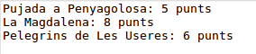

Exercicis
 Exercici 6.1
Exercici 6.1
Crea un nou paquet anomenat exercicis en el projecte Tema6. Incorpora en el projecte el driver per a DB4O , sino el tenies incorporat.
- Copia el paquet util.bd al projecte. Aquest paquet el vam fer en l'exercici T4Ex4 i inclou les classes Coordenades.kt , PuntGeo.kt i Ruta.kt. També inclou la classe GestionarRutesBD.java , que ens permetia gestionar la BD Rutes.sqlite
- Copia també la BD Rutes.sqlite , creada en exercicis anteriors, però que l'última actualització és del mateix exercici.
- Incorpora el driver de SQLite
- Hem de canviar la definició de les propietats de la classe Ruta , ja que ara hem de permetre valors nuls per a poder fer consultes pel mètode queryByExample(). La manera més senzilla segurament serà:
class Ruta (var nom: String?, var desnivell: Int?, var desnivellAcumulat: Int?, var llistaDePunts: MutableList<PuntGeo> = mutableListOf<PuntGeo>()): Serializable
- D'aquesta manera, per a crar un objecte Ruta que estiga totalment buit, ho faríem així: Ruta(null,null,null)
- Podria ser que aquest canvi en la definició de les propietat de Ruta provoque algun error en GestionarRutesBD. Si és així corregeix-los
A partir d'aci comença realment l'exercici, que consistirà en passar les dades des de Rutes.sqlite fins la Base de Dades de DB4O Rutes.db4o.
- Crea't el programa Ex1_PassarRutaSqliteDB4O.kt.
- Has d'agafar totes les rutes de Rutes.sqlite i deixar-les en un ArrayList de Ruta amb el mètode ja creat de GestionarRutesBD.java anomenat llistat().
- Insereix totes les rutes en la BD Rutes.db4o.
- Tanca la connexió.
- Crea't el programa Ex1_VisRutaDB4O.kt , que ha de connectar a la Base de Dades Rutes.db4o , ha de llegir totes les rutes (ves amb compte, perquè només has de llegir rutes; s'han guardat més objectes: punts i coordenades) i ha de traure per pantalla el nom de la ruta i el número de punts.

Exercici 6.2
En el mateix projecte i paquet anem a fer una aplicació amb interfície gràfica atancant a DB4O.
El programa mostrarà una ruta, i hi haurà també uns botons per anar a la primera, anterior, següent i última ruta. Hi ha també el botó de Tancar, que tancarà la connexió amb la Base de Dades i eixirà del programa.
Per a omplir el JTable amb els punts, teniu un mètode que ho fa automàticament: plenarTaula(). Observeu quin és el seu paràmetre.
De moment tindrà aquest aspecte:

en el qual, a banda de les etiquetes (JLabel) i quadres de text (JTextField) tenim una taula (JTable) on col·locarem tots els punts de la ruta (nom, latitud i longitud). Tots els controls són no editables, per a no poder introduir cap informació.
Aquest seria l'esquelet del programa.
Copieu-lo en un fitxer Kotlin anomenat Ex2_VisRutes_DB4O.kt , i poseu les sentències necessàries després dels comentaris:
import java.awt.EventQueue
import java.awt.GridLayout
import java.awt.FlowLayout
import javax.swing.JFrame
import javax.swing.JPanel
import javax.swing.BoxLayout
import javax.swing.JComboBox
import javax.swing.JButton
import javax.swing.JTextArea
import javax.swing.JLabel
import javax.swing.JTextField
import javax.swing.JTable
import javax.swing.JScrollPane
import util.bd.Ruta
import util.bd.PuntGeo
import com.db4o.Db4oEmbedded
class FinestraComplet : JFrame() {
var llista = arrayListOf<Ruta>()
var numActual = 0
// Declaració de la Base de Dades
val qNom = JTextField(15)
val qDesn = JTextField(5)
val qDesnAcum = JTextField(5)
val punts = JTable(1, 3)
val primer = JButton(" << ")
val anterior = JButton(" < ")
val seguent = JButton(" > ")
val ultim = JButton(" >> ")
val tancar = JButton("Tancar")
init {
defaultCloseOperation = JFrame.EXIT_ON_CLOSE
setTitle("JDBC: Visualitzar Rutes Complet")
setLayout(GridLayout(0, 1))
val p_prin = JPanel()
p_prin.setLayout(BoxLayout(p_prin, BoxLayout.Y_AXIS))
val panell1 = JPanel(GridLayout(0, 2))
panell1.add(JLabel("Ruta:"))
qNom.setEditable(false)
panell1.add(qNom)
panell1.add(JLabel("Desnivell:"))
qDesn.setEditable(false)
panell1.add(qDesn)
panell1.add(JLabel("Desnivell acumulat:"))
qDesnAcum.setEditable(false)
panell1.add(qDesnAcum)
panell1.add(JLabel("Punts:"))
val panell2 = JPanel(GridLayout(0, 1))
punts.setEnabled(false)
val scroll = JScrollPane(punts)
panell2.add(scroll, null)
val panell5 = JPanel(FlowLayout())
panell5.add(primer)
panell5.add(anterior)
panell5.add(seguent)
panell5.add(ultim)
val panell6 = JPanel(FlowLayout())
panell6.add(tancar)
add(p_prin)
p_prin.add(panell1)
p_prin.add(panell2)
p_prin.add(panell5)
p_prin.add(panell6)
pack()
primer.addActionListener {
// instruccions per a situar-se en la primera ruta, i visualitzar-la
}
anterior.addActionListener {
// instruccions per a situar-se en la ruta anterior, i visualitzar-la
}
seguent.addActionListener {
// instruccions per a situar-se en la ruta següent, i visualitzar-la
}
ultim.addActionListener {
// instruccions per a situar-se en l'últim ruta, i visualitzar-la
}
tancar.addActionListener {
// instruccions per a tancar la BD i el programa
}
inicialitzar()
VisRuta()
}
fun plenarTaula(ll_punts: MutableList<PuntGeo>) {
var ll = Array(ll_punts.size) { arrayOfNulls<String>(3) }
for (i in 0 until ll_punts.size) {
ll[i][0] = ll_punts.get(i).nom
ll[i][1] = ll_punts.get(i).coord.latitud.toString()
ll[i][2] = ll_punts.get(i).coord.longitud.toString()
}
val caps = arrayOf("Nom punt", "Latitud", "Longitud")
punts.setModel(javax.swing.table.DefaultTableModel(ll, caps))
}
fun inicialitzar() {
// instruccions per a inicialitzar llista i numActual
}
fun VisRuta() {
// instruccions per a visualitzar la ruta actual (l'índex el tenim en numActual
ActivarBotons()
}
fun ActivarBotons() {
// instruccions per a activar o desactivar els botons de moviment ( setEnabled(Boolean) )
}
}
fun main(args: Array<String>) {
EventQueue.invokeLater {
FinestraComplet().isVisible = true
}
}
Exercici 6.3 (voluntari)
Modificar la classe anterior per a incorporar també la distància total de la ruta. Per a poder calcular-la ens ajudarem de la següent funció que calcula la distància en quilòmetres entre dos punts, donant les coordenades (latitud i longitud) dels dos punts: Dist(lat1,long1,lat2,long2). Observeu que per a calcular la distància de forma correcta hem de tenir en compte tots els punts (si només tenim en compte el primer punt i l'últim, la distància d'una ruta circular seria 0).
Podeu incorporar-la a la classe on esteu fent l'exercici (Ex2_VisRutes_DB4O.kt).
fun Dist(lat1: Double, lon1: Double, lat2: Double, lon2: Double): Double {
val R = 6378.137 // Radi de la Tierra en km
val dLat = rad(lat2 - lat1)
val dLong = rad(lon2 - lon1)
val a = Math.sin(dLat / 2) * Math.sin(dLat / 2) + Math.cos(rad(lat1)) * Math.cos(rad(lat2)) * Math.sin(dLong / 2) * Math.sin(dLong / 2)
val c = 2 * Math.atan2(Math.sqrt(a), Math.sqrt(1 - a))
val d = R * c
return Math.round(d*100.0)/100.0
}
fun rad(x: Double): Double {
return x * Math.PI / 180
}
Aquest seria un exemple:

Llicenciat sota la Llicència Creative Commons Reconeixement NoComercial CompartirIgual 2.5